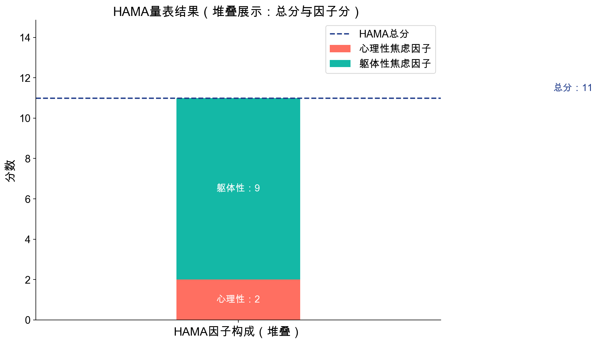
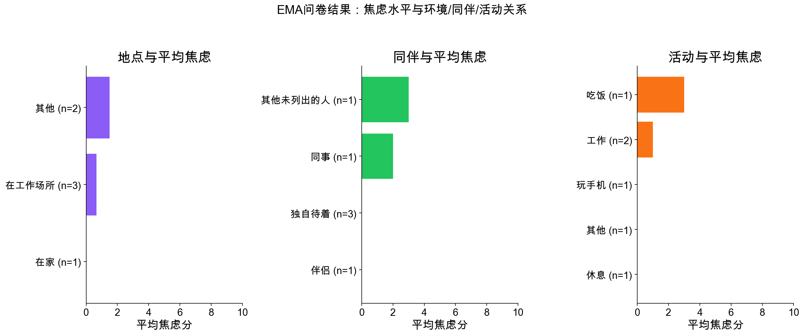
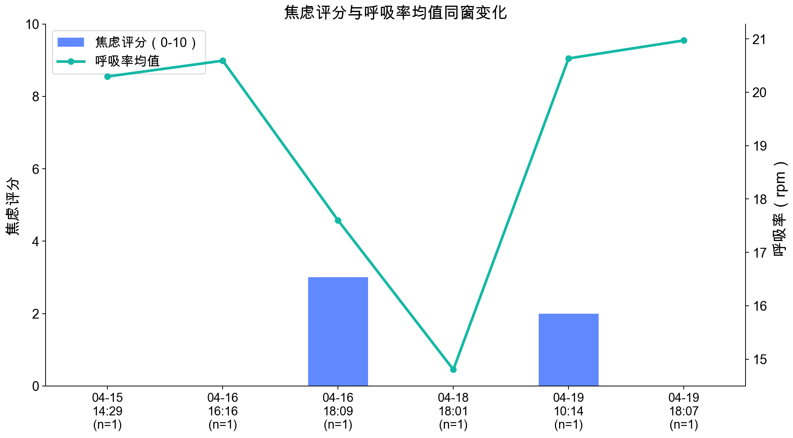
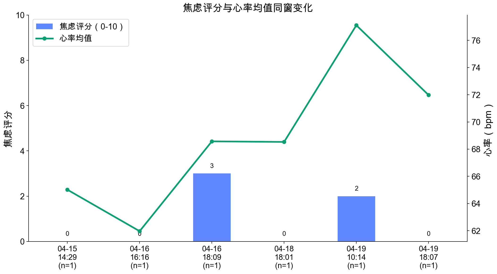
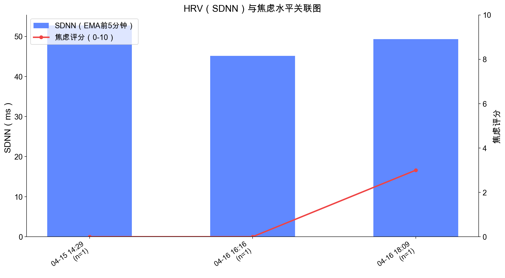
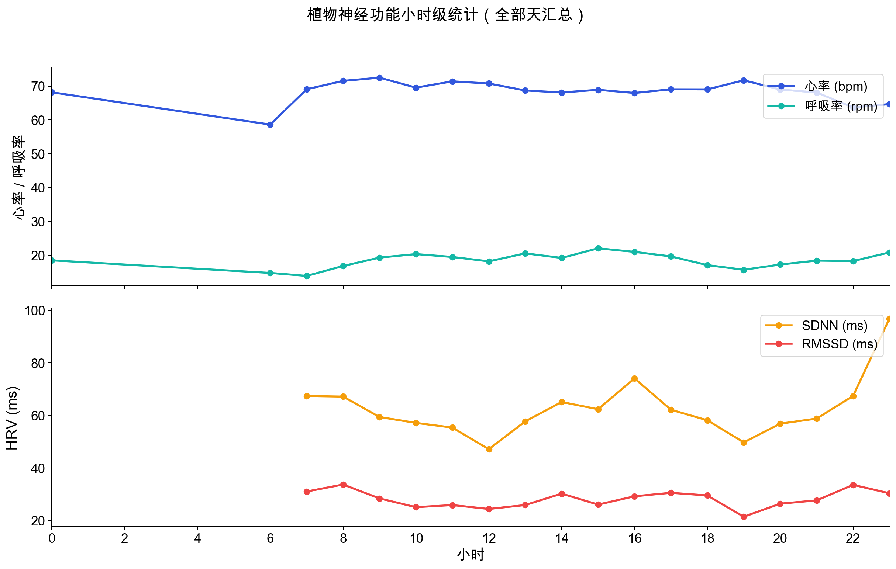
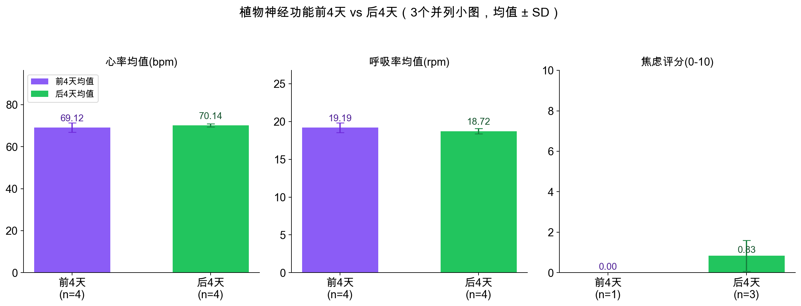

图1｜HAMA量表结果（堆叠图：总分与因子分）

筛选期 HAMA 总分为 11 分，其中心理性焦虑因子 2 分、躯体性焦虑因子 9 分。躯体因子相对更突出，可重点关注胸闷/气短、心悸、出汗、胃肠不适、肌肉紧张、头晕等身体信号在日常中的出现时点。
本页聚焦「焦虑评分与生理信号」的关系。完成情况仅作起始说明，后续以生理关联图为主。

筛选期 HAMA 总分为 11 分，其中心理性焦虑因子 2 分、躯体性焦虑因子 9 分。躯体因子相对更突出，可重点关注胸闷/气短、心悸、出汗、胃肠不适、肌肉紧张、头晕等身体信号在日常中的出现时点。

EMA数据显示，焦虑评分会随所处环境、身边同伴和正在进行的活动而变化。这提示焦虑并非固定水平，而是与当下情境密切相关；后续可继续观察「哪些场景更容易升高、哪些场景更稳定」。

在问卷填写前后30分钟窗口内，焦虑由0分上升至2-3分时，呼吸率均值也呈上浮趋势。呼吸节律可能是较早可感知的身体线索。

在EMA窗口中，焦虑较高时点（如 4/16 晚、4/19 上午）对应心率均值相对更高。提示主观紧张与心率变化在部分时点同步出现。

该图将 EMA 前5分钟 SDNN 与同一时点焦虑评分放在同一时间轴比较。若后续持续出现「焦虑升高而SDNN下降」，可作为自主神经紧张状态的重点观察线索。

每条曲线都按每小时1个点统计：上图图例包含心率与呼吸率，下图图例包含SDNN与RMSSD（若该小时有数据则计算）。可切换「每天」或「全部天汇总」进行查看，便于做每日自主神经功能对比。

该图按「前4天 vs 后4天」比较心率、呼吸率与焦虑评分，柱顶误差棒为标准差（SD），用于展示天与天之间波动。可据此观察后半程是否出现更稳定（SD变小）或负荷增加（均值上升且SD变大）的趋势。